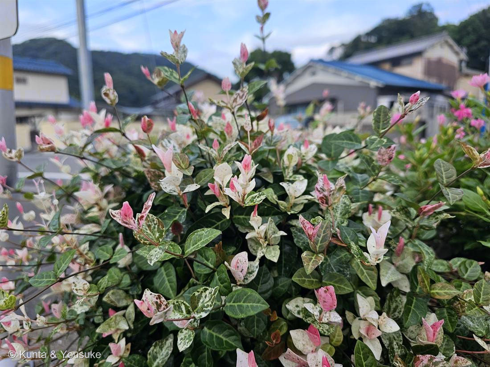
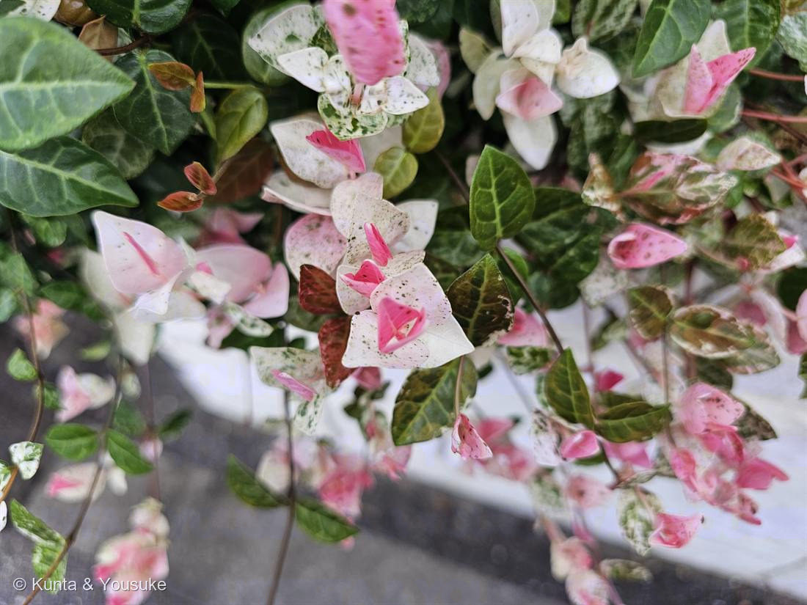

地図を読み込んでいるよ…
🔍 写真も地図も、押しているあいだ拡大して見られるよ（スマホは指を置いてすこし待ってね）。
🌍 の地図＝この子がもともと自生している場所を緑に。テイカカズラの斑入り園芸品種。もとになった野生のテイカカズラは、本州の秋田・岩手県あたりより南、四国、九州、そして朝鮮半島に自生する暖地の木。この花壇の株は、その日本生まれの木から選ばれた品種を、人が植えたもの。
⚠北海道と青森は塗っていない（「秋田・岩手県以南」だから）。⭐088イキシア（南アフリカ）や078モクビャッコウ（南の島）とちがって、この子の親は、もともと日本の林にいる——港の花壇にはめずらしく「ふるさとが日本」の子。⚠この花壇の株はその木から選ばれた斑入り品種を、人が植えたもので、野生のテイカカズラは、こんなに白くもピンクにもならないよ。
⚠ 地図は国（日本と中国だけ県・省）までしか塗れないから、ほんとうの分布より広く見えていることがあるよ。地図はだいたいの場所。正確なところは、上の文を見てね。
ハツユキカズラ（初雪蔓）
Trachelospermum asiaticum 'Hatsuyukikazura'
テイカカズラの斑入り園芸品種／ 新芽がピンク→白→緑と三色に変わる／ ⚠白い乳液は有毒（キョウチクトウ科）／ 原産 · 親のテイカカズラは日本（暖地）と朝鮮半島
キョウチクトウ科 · Apocynaceae（テイカカズラ属 Trachelospermum）
燻太さんの一言が、そのまま正体だった「花びらのような葉っぱが、天然石みたいでかわいいね。この子は斑入りが特に顕著な品種みたい。」──ピンクも白も、じつは花じゃない。ぜんぶ「葉っぱ」。
⭐⭐⭐ 「花びらのような葉っぱ」── その言葉が、正体そのものだった
- 燻太さんが写真を渡すときにこう言った：「花びらのような葉っぱが、天然石みたいでかわいいね。この子は斑入りが特に顕著な品種みたい。」
- ⭐⭐⭐「花びらのような葉っぱ」──この一言が、この子のいちばん大事なところを言い当てている。写真②のピンクや白の、花びらみたいにひらひらしているもの。あれは花じゃない。ぜんぶ「葉っぱ」。しかも飾りのための特別な葉でもなく、ただの新しく出てきた若い葉なんだ。
- 新芽＝濃いピンク → だんだん 薄いピンク → 白（緑の吹雪斑つき）→ 緑 と色が移りかわる（GardenStory・LOVEGREEN）。だから一株のなかにピンク・白・緑がぜんぶ同時にある＝「天然石みたい」の正体。
- 花はじつは咲く（親のテイカカズラは初夏に白い風車形の花）。でもこの品種は葉の色を楽しむ子で、花より先に、葉が花のふりをしている。
- ⭐連作テーマ「花に見えて、じつは花じゃない」に、いちばんの新顔。これまでは「花びらに見えて、じつは萼・萼・総苞・苞」だった。──どれも「花のそばにある特別な部分」。でもこの子は「花に見えて、じつは“ただの若い葉”」。いちばん普通のものが、いちばん花のふりをしている。
⭐⭐⭐ 三色は「光でつくる色」── 足し算のピンクと、引き算の白
- 燻太さんは植物分子遺伝学者だから、ここはちゃんと書くね。この子の三色は、しくみが2つ、まったく別なんだ。
- ⭐① ピンク＝アントシアニン＝「足し算の色」。ピンク〜赤は、アントシアニンという色素をわざわざ作ってのせた色。日当たりが良くないと、ピンクや白がきれいに出ず、緑一色になる（GardenStory・LOVEGREEN・みんなの趣味の園芸）。──つまり、このピンクは「光で作る色」。強い光・紫外線から新芽を守る日よけ（015 ホーリーバジルの葉裏とまったく同じ理由）。
🎨色でつながる仲間（アントシアニンの道）にまた一人：007 シロツメクサ／015 ホーリーバジル／023 ブルーベリー／028 ムラサキツユクサ／030 バラ。 - ⭐② 白＝斑入り＝「引き算の色」。白いところは、色素を足したんじゃなくて、葉緑素（クロロフィル＝緑の色素）が抜けている。緑が無いから白く見える。これが斑入り＝キメラ＝一枚の葉のなかに、緑を作れる細胞と作れない細胞がモザイクに混ざっている。⚠だから斑入りの株は、緑だけの株より、じつは少し体が弱い（光合成する緑の面積が減るからね）。
- ⭐⭐⭐同じ一枚の葉の上で、「色素を足したピンク」と「色素を抜いた白」が、となりあっている。足し算と引き算が、いっしょにいる葉なんだ。
同定について
- ハツユキカズラ（Trachelospermum asiaticum 'Hatsuyukikazura'）で確定。⚠種は asiaticum、品種名まで。
- ⭐効いた問い＝「この形は、他の子を落とせるか？」
- ①⭐葉が対生・全縁・厚くて革質・つやつや（写真①②）＝ツルマサキ（斑入りのニシキギ科）を落とせる（あちらは葉に鋸歯があって、つき方もちがう）／②⭐新芽がピンク→白（緑の吹雪斑）→緑の三色に移りかわる＝ハツユキカズラだけの十八番（ふつうの斑入り植物は白か黄色の斑で、ここまでピンクから始まらない）／③細い木質のつるが這い、絡んで広がる＝テイカカズラ属（つる性常緑低木）の姿／④茎は赤み〜褐色（写真②の垂れるつる）＝新梢のアントシアニン／⑤場所＝道路沿いの花壇でこんもり茂ってグラウンドカバー＝ハツユキカズラの定番の使われ方。
⚠ かわいいけど、キョウチクトウ科 ── 白い乳液は有毒
- ⭐この子はキョウチクトウ科テイカカズラ属。親のテイカカズラは「茎や葉を切ると白い乳液が出る（有毒）」（Wikipedia）。
- キョウチクトウ科は、科ぜんたいが毒を持つ一族。この図鑑の仲間だと、061 キョウチクトウ（⚠⚠⚠猛毒の名家）・045 ブルースター・051 ガガイモ・057 ニチニチソウがそう。
- ⚠だからこんなにかわいくても、ちぎった汁を口や目に入れない。ペットや小さな子がかじらないようにね。──天然石みたいな見た目と、毒を持つ家系。そのギャップも、この子の顔だよ。
⭐ 学名の由来 ── 藤原定家が、蔓になった
- 和名「テイカカズラ」は、藤原定家（ふじわらのていか）の名前から。
- 伝説では、定家が式子内親王（しょくしないしんのう）を深く愛し、亡くなったあとも忘れられず、「定家葛」に生まれ変わって、そのお墓にからみついた、という（Wikipedia）。──つる植物が木や墓石にぴったり絡む姿から生まれた、切ない名前。
- ハツユキ（初雪）は、白い斑を、降りはじめの雪に見立てた園芸品種の名前。──平安の恋の蔓に、初雪の名がついている。
この植物のこと
- キョウチクトウ科テイカカズラ属の、常緑つる性の木（園芸品種）。グラウンドカバー、寄せ植え、ハンギングでよく使われる、丈夫で育てやすい子（GardenStory）。
- ⭐きれいな三色を保つコツ＝「日当たり」と「剪定」。日陰だとピンク・白が出ず緑にもどってしまう／定期的に切り戻すと新芽が出て、白やピンクがよみがえる（新芽が色づくのは4〜6月）。ただし夏の強すぎる直射は葉焼けに注意。
- ⭐おまけ植物は テイカカズラ（この子の、野生の原種）。ハツユキカズラは、この日本生まれの木から選ばれた斑入り品種。原種のテイカカズラは、こんなに白くもピンクにもならない（葉は深緑・幼木で葉脈に沿った白斑が出ることはある）。暖地の林で、木や岩に気根で張りついて登り、初夏に白い風車形（先が5裂）の花を咲かせ、ジャスミンに似た甘い香りがする。──探そうね。この花壇の子の「もとの姿」を。
- ⭐この子は、港の花壇にはめずらしく「ふるさとが日本」の子。088 イキシア（南アフリカ）や078 モクビャッコウ（南の島）とちがって、もとになった木は、もともと日本の林にいる。──遠くから来た子ばかりの花壇に、日本生まれの子が、いちばん派手な服を着て立っている。
参考：Wikipedia「テイカカズラ」（Trachelospermum asiaticum・キョウチクトウ科テイカカズラ属・常緑つる性低木・葉は対生・長さ3〜8cmの楕円形・花期5〜6月「はじめ白く、次第に淡黄色に」・ジャスミンに似た芳香・「茎や葉を切ると白い乳液が出る（有毒）」・栽培品種にハツユキカズラ（斑入り）・本州〈主に秋田・岩手県以南〉・四国・九州・朝鮮半島・名の由来＝藤原定家の伝説）／GardenStory「ハツユキカズラを育てたい！」（新芽が濃いピンク→薄いピンク→白→緑の地に白斑→緑と変化・ピンクを楽しむには日当たりのよい場所が必要／緑一色になることがある・丈夫で育てやすい・剪定でリフレッシュ）／LOVEGREEN「ハツユキカズラの育て方」（日照と葉色・白くなるのは新芽の育つ4〜6月・定期的な剪定）／みんなの趣味の園芸（NHK出版）「ハツユキカズラ」